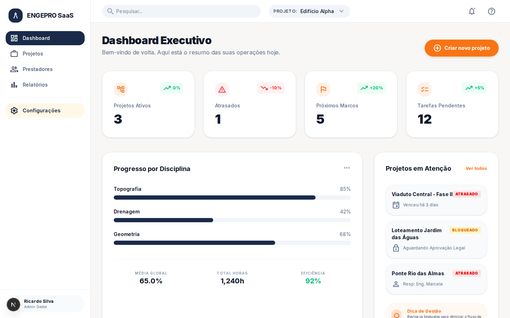
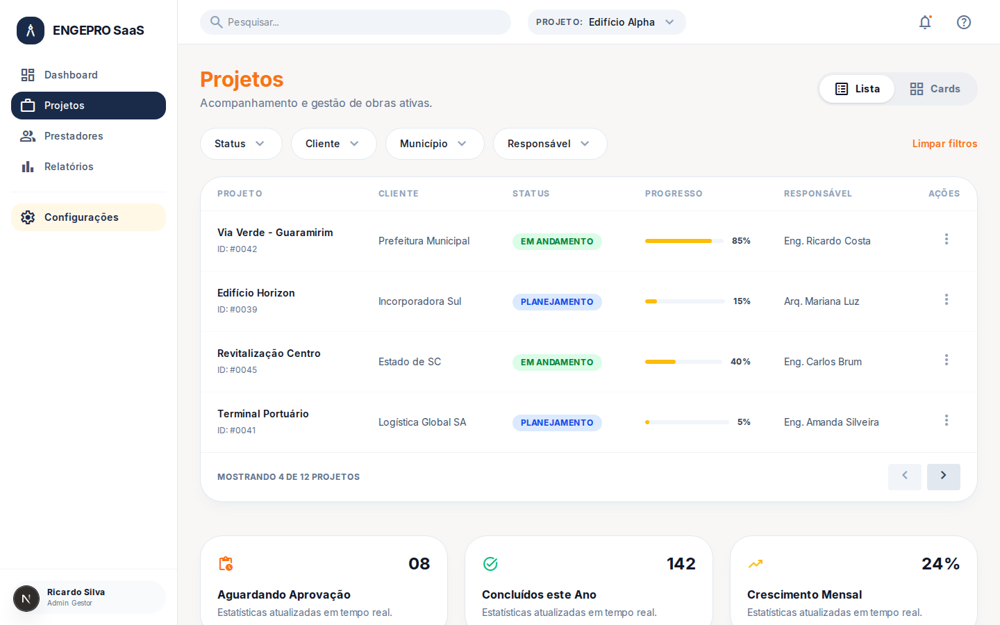
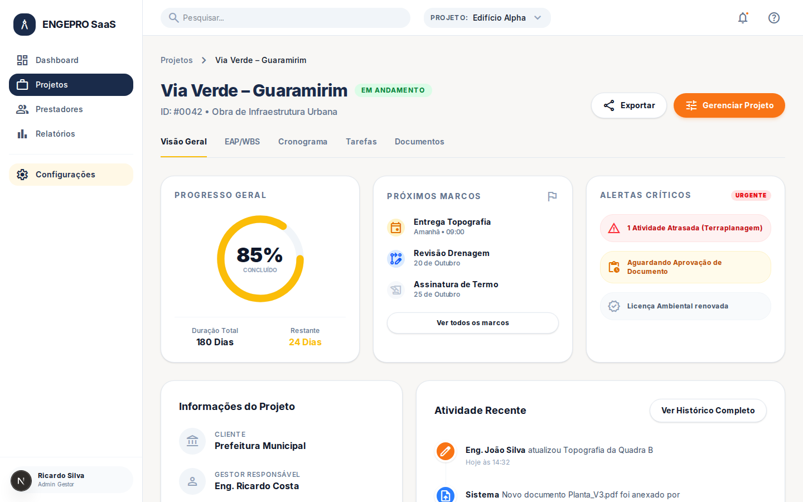
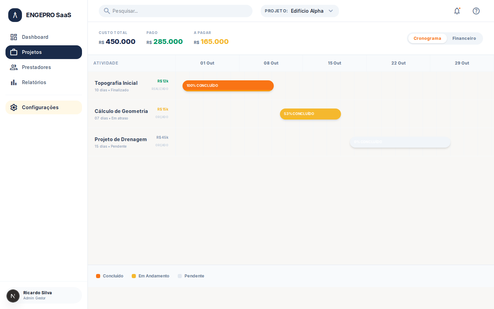
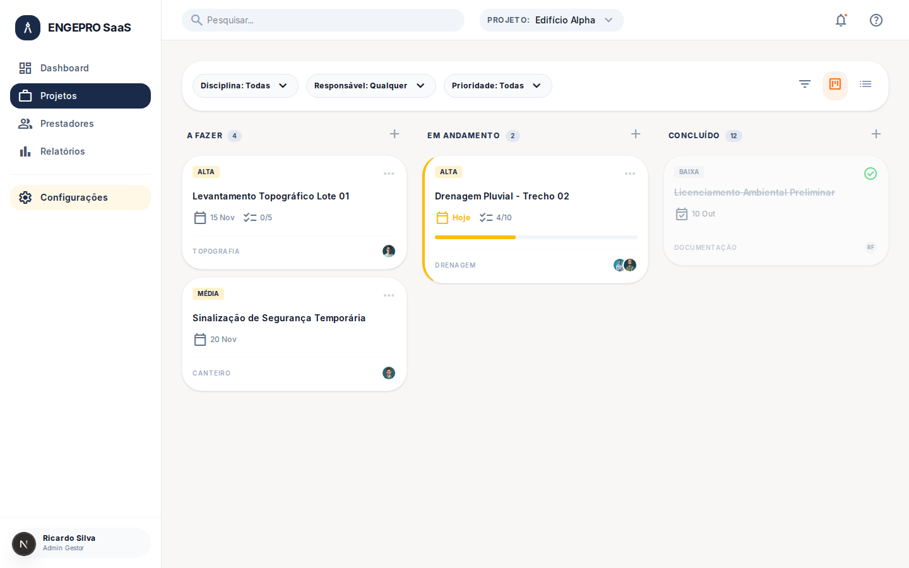
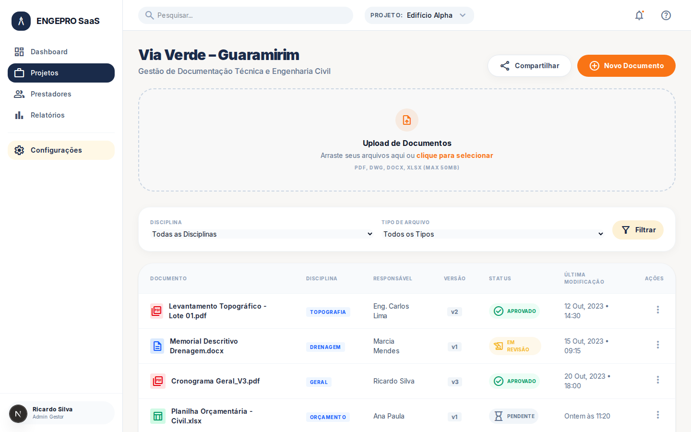
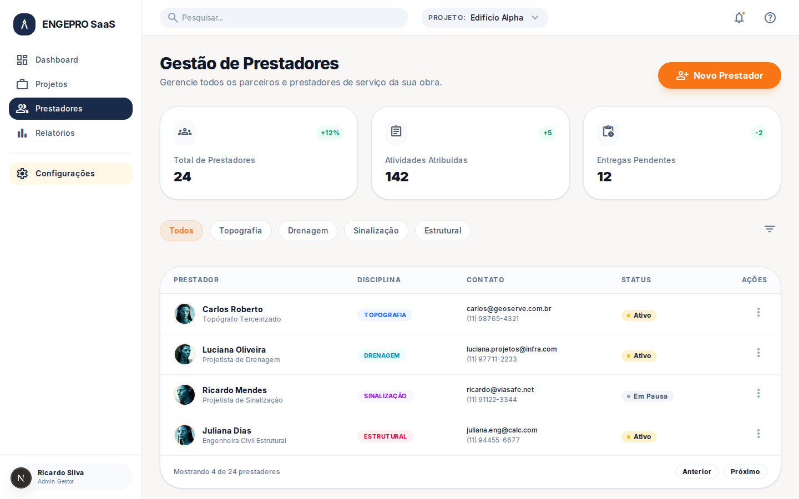
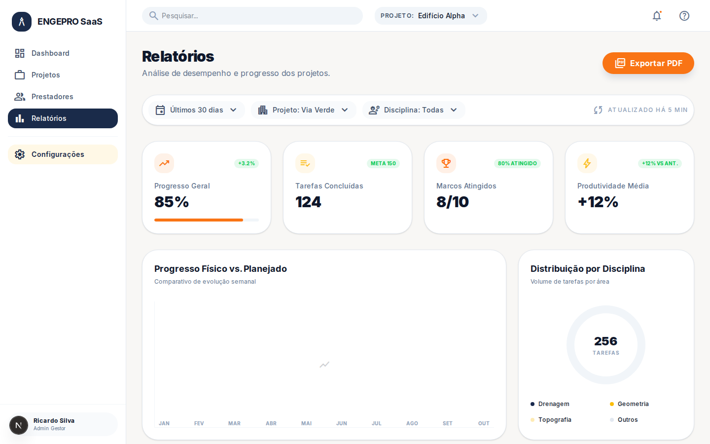
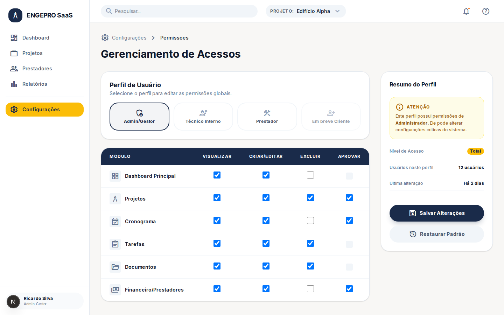

Dashboard Executivo
Visão macro com indicadores de projetos ativos, atrasos, marcos e progresso por disciplina.

Gestão de Projetos
Lista interativa com filtros avançados, barra de progresso real e status de cada obra.

Overview do Projeto
Detalhamento individual com alertas críticos, próximos marcos e histórico de atividades recentes.

Cronograma Físico-Financeiro
Gráfico de Gantt integrado com custos por etapa, status de pagamento e dependências.

Kanban de Tarefas
Gestão operacional do canteiro com prioridades, checklists e responsáveis por tarefa.

Repositório Técnico
Controle de versionamento de plantas, memoriais e planilhas com fluxo de aprovação.

Base de Prestadores
Gestão centralizada de terceirizados por disciplina e status de atividade.

Inteligência de Dados
Relatórios de desempenho físico vs planejado e produtividade da equipe.

Governança (RBAC)
Matriz detalhada de permissões por perfil de usuário, garantindo segurança total dos dados.